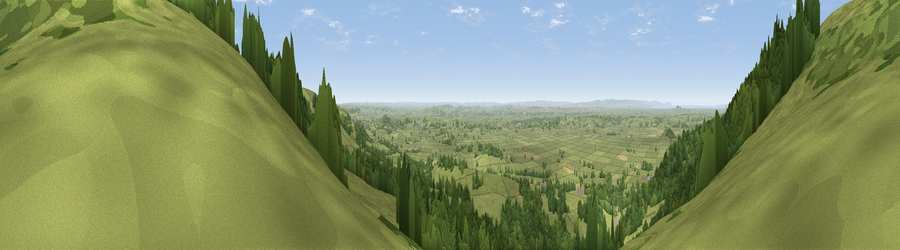

Viewpoint near Rodney Stoke
#3693 in England · top 4% of its area beats it · near Rodney StokeThe view, rendered

A 360° render of this exact spot computed from the terrain model, tree cover and land cover — summer colours, afternoon light, calibrated against photographs of famous viewpoints. Real trees, hedges and buildings will differ in detail.
The panorama
Grey silhouette: terrain skyline in each direction (720 bearings, Earth curvature and refraction included). Dashed green: skyline with trees (+15 m) and buildings (+8 m) as obstacles. Blue strip: how far the ground is visible on each bearing.
Where the view opens
Wedge length = distance to the farthest visible ground on that bearing (vegetation-aware). Rings at 10, 25 and 50 km.
What fills the view
58% grassland · 39% woodland · 2% cropland ·
Angular shares of the visible panorama (visual magnitude), not map area. Landscape diversity 0.35 (0–1 Shannon).
Key numbers
More beautiful places nearby
The staircase of upgrades: each row has a higher view potential than everything closer. Driving times are estimates from straight-line distance, calibrated against real road routing — check an actual route before setting out.
| Place | Direction | Drive | Score |
|---|---|---|---|
| Viewpoint near Rodney Stoke | NW · 1 km | ~3 min | 75.6 |
| Beacon Batch | NNW · 7 km | ~14 min | 79.4 |
| Bleadon Hill [Loxton Hill] | WNW · 15 km | ~26 min | 79.6 |
| Cothelstone Hill | WSW · 35 km | ~54 min | 82.1 |
| Viewpoint near Holford | WSW · 36 km | ~54 min | 82.2 |
| Viewpoint near West Bagborough | WSW · 36 km | ~54 min | 84.3 |
| Wills Neck | WSW · 37 km | ~55 min | 85.7 |
| Viewpoint near Holford | WSW · 37 km | ~55 min | 85.9 |
51.25212, -2.72104 · source: screening · position refined by local search. Computed location — check access rights before visiting.